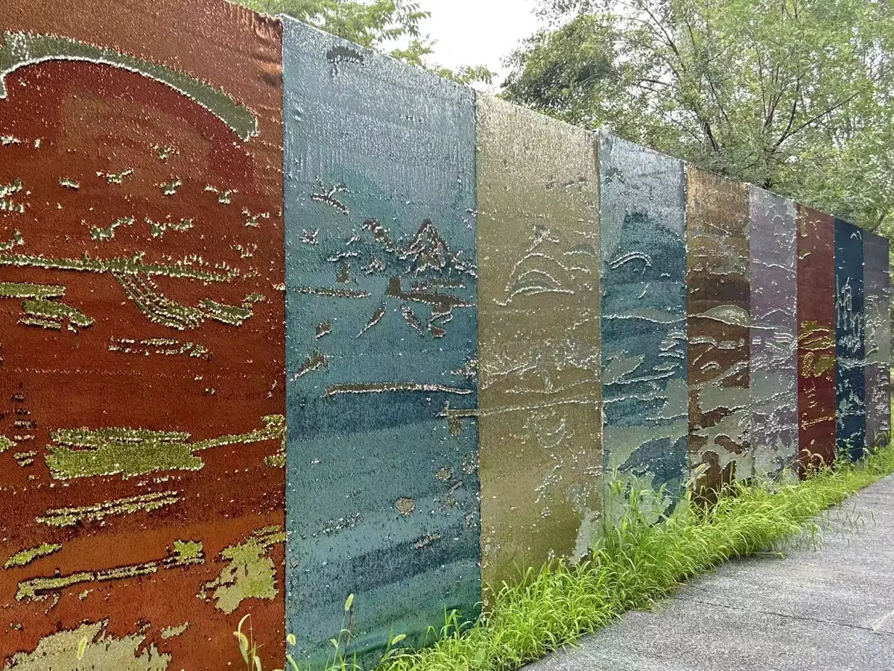

点位介绍
您眼前这面闪闪发光的互动墙，就是园区的特色趣味打卡点 —— 创意鳞片墙。
整面墙以传统龙鳞为设计灵感，由数万片独立的双色鳞片有序拼接而成。每片鳞片正反呈现不同色彩，只需用指尖轻轻拨动，便能翻转变色。鳞片在光影中起伏流转，让墙面呈现出灵动多变的视觉效果。
在这里，您可以随手勾勒图案、写下心情寄语，也可以与家人朋友共同创作一幅主题画面。每一次翻转，都是灵感的表达；每一件作品，都是专属于您的游园印记。
温馨提示：体验时请轻拨、轻翻，爱护互动装置，共同守护这片自由创作的趣味空间。

园区语音导览
▶语音讲解
您眼前这面闪闪发光的互动墙，就是园区的特色趣味打卡点 —— 创意鳞片墙。
整面墙以传统龙鳞为设计灵感，由数万片独立的双色鳞片有序拼接而成。每片鳞片正反呈现不同色彩，只需用指尖轻轻拨动，便能翻转变色。鳞片在光影中起伏流转，让墙面呈现出灵动多变的视觉效果。
在这里，您可以随手勾勒图案、写下心情寄语，也可以与家人朋友共同创作一幅主题画面。每一次翻转，都是灵感的表达；每一件作品，都是专属于您的游园印记。
温馨提示：体验时请轻拨、轻翻，爱护互动装置，共同守护这片自由创作的趣味空间。